Estou nesta escola desde 2006 e adoro lecionar Ciências, por isso acredito que para ser uma boa professora preciso sempre estar me
atualizando, aprendendo e desenvolvendo novas competências.
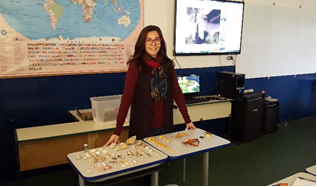
Professora Claudia
Este ano nossa escola está retornando ao curso de Robótica e esperamos aprender bastante e dar continuidade aos trabalhos com os alunos.
Este vídeo no site do youtube que mostra como os desafios e as experiências de vida estão sempre proporcionando
aprendizados, basta estar atento para observar, encarar os desafios e aprender.
Aproveite cada dia para aprender.
Cyberpedagogia 2021
Essas atividades e lições de casa foram propostas no primeiro encontro do curso, Aula 1, onde foram dadas orientações sobre como
organizar o Diário de Bordo (DB), foi feito um levantamento dos componentes elétrico-eletrônicos que possuímos e apresentadas as
Competências para a Sociedade & Indústria 5.0 propostas pela União Européia e refletimos sobre quais competências dentre as Soft Skill
e Tecnológicas que já temos desenvolvida e/ou não desenvolvidas.De início fiquei decepcionada porque não recebi o email de confirmação para participar do curso e perdi a primeira aula. A minha
parceira de escola, Professora Claudia, pediu informações para o monitor Vinicius, que verificou que eu fui aceita para participar do
curso mas era o meu email que estava errado. Tudo foi acertado, assisti as aulas pelo YouTube e fiz as atividades e lições propostas na
Aula 1. Fiquei super feliz!
Atividades e Lições de Casa - Aula 1
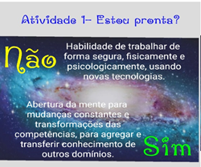 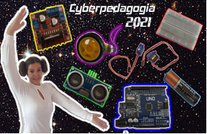 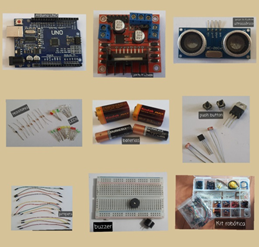
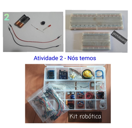 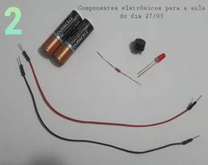
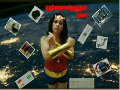 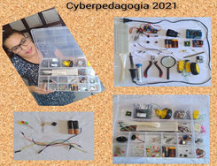
Atividade - Aula 1
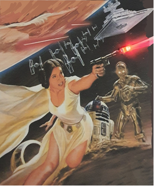 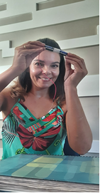
Lição de Casa - "Ícone com Led e/ou Buzzer"
Princesa Leia
Uma base rebelde é descoberta e ataques são feitos por naves do Império e muitos caças que usam todos seus recursos. Ao perceber o perigo, princesa Leia acompanhada por R2D2 e C3PO, entra em ação usando seu blaster com sua poderosa habilidade
em dissipar energia concentrada, sua coragem e determinação, conseguindo deter vários Stormtrooper. O resultado dessa grande batalha não poderia ser diferente e Leia, junto com seu grupo rebelde, comemoram a derrota do
Império nessa tentativa de invasão de mais um planeta.
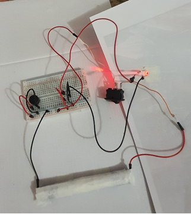
Mulher Maravilha
A Mulher Maravilha foi escolhida para salvar o planeta Terra de inimigos que queiram acabar com o planeta e com toda sua
biodiversidade. Para isso ela conta com sua força física.
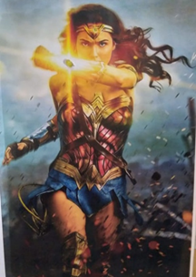 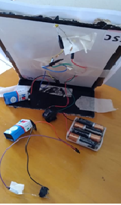
Lição de Casa - eDB 'narrativa" e eDB & Link
Essas lições foram propostas em nosso segundo encontro do curso, Aula 2, e foi extremamente enriquecedora, pois aprendi criar
um documento simples no formato HTML local - offline. De início fiquei bem ansiosa, fiz várias tentativas que deram errado, mas persisti. Assisti novamente a aula pelo YouTube,
li o PDF com as orientações de como fazer as sintaxes para inserir imagens, audio, video e Links. Foi um desafio e tanto! Mas adoro
quando vejo que estou aprendendo e ideias começam aflorar de como poderei trabalhar esse aprendizado com meus alunos.
Aula 3 - Inteligência Artificial e Habilidades
Nesta aula vimos como programar usando a linguagem AIML para criar diálogos semelhantes a linguagem natural por meio de softwares,
simulando inteligência artificial. Para isso, realizamos uma atividade de interação com o Chatbot Cicero e, como lição de casa, editamos
o arquivo de programação do Chatbot Cicero, criando um novo Chatbot. Me senti animada para resolver esse desafio de programar um Chatbot.
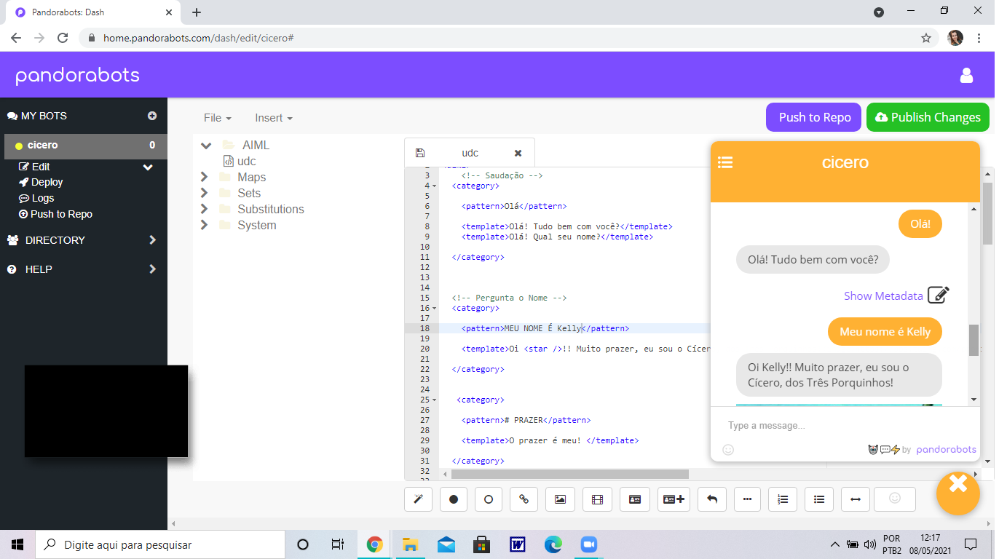
Lição de Casa 3 - Criando um Chatbot
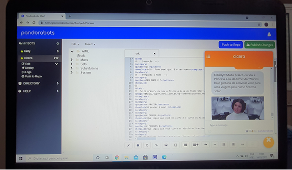 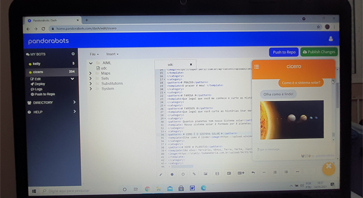
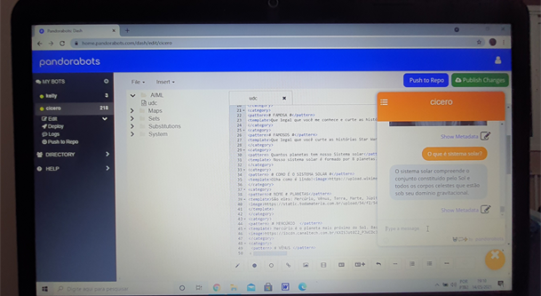 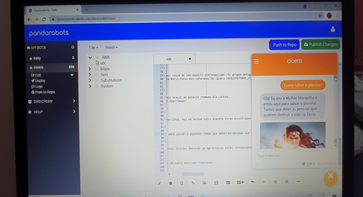
Vimos também como reduzir uma habilidade "analógica" num formato mais "digital" usando a técnica de Amostragem, proposta por A. Osborne,
IBM.
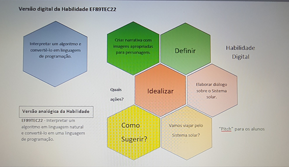
Atividade 4 - Motores CC
Nesta aula vimos o funcionamento de um motor CC, tipos de motor CC, o redutor e a montagem de sistemas com motores CC. Na primeira atividade
um Disco de Newton foi impresso e acoplado num motor CC sem redutor. Na segunda atividade foi sugerido usar o aplicativo de celular, RPMMeter, para
medir a rotação do motor CC com redutor.